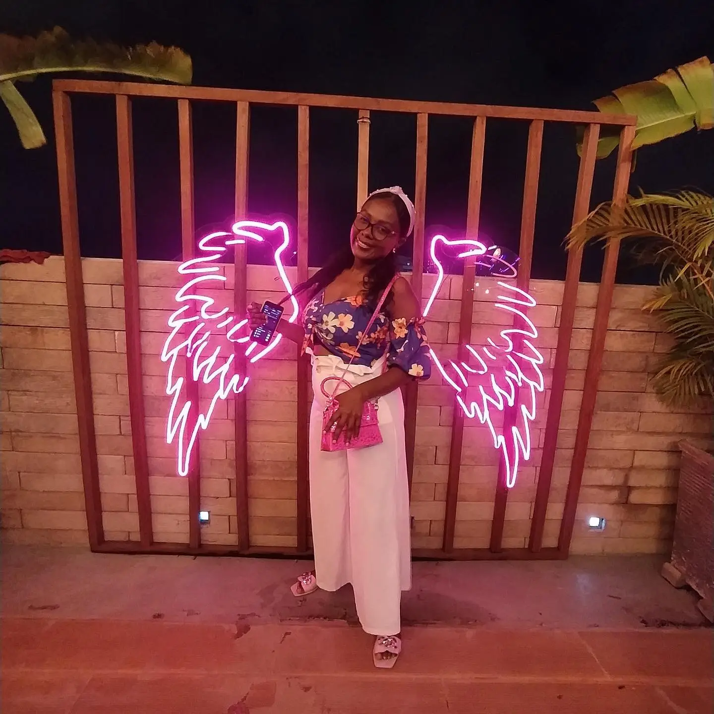
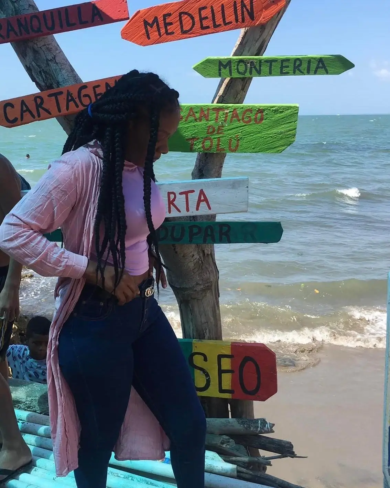

GISE
CASSIANI
Creadora UGC
CONOCE MI TRABAJO


¿POR QUÉ UGC?
El contenido UGC es la clave dentro
de tu estrategia de marketing
Te ayuda a destacar en un mercado saturado
La autenticidad del contenido UGC hace que el 90%
de los consumidores confíen más en
él vs. otros tipos
de contenido

¡Hola! Soy Gise Cassiani. Me apasiona crear contenido que conecte de manera auténtica con las personas.
Mi objetivo es compartir experiencias reales con productos y servicios de forma natural, creativa y
honesta. Disfruto mostrar situaciones cotidianas relacionadas con el estilo de vida, además de explorar
diferentes categorías de productos y servicios. Creo en el poder de las historias que se sienten
cercanas, generan confianza y crean conexiones genuinas con la audiencia.
Te invito a explorar mi portafolio y descubrir cómo puedo sumar valor a tu marca desde lo genuino.